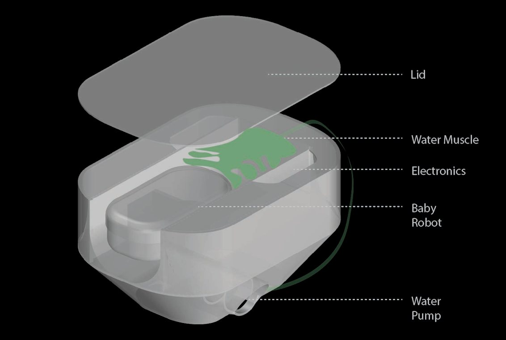
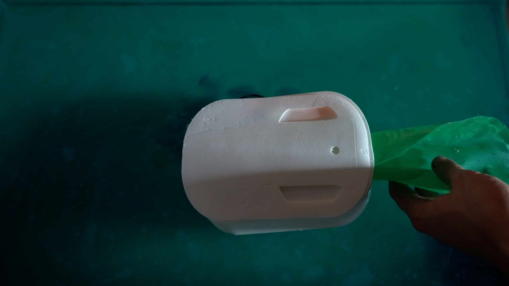
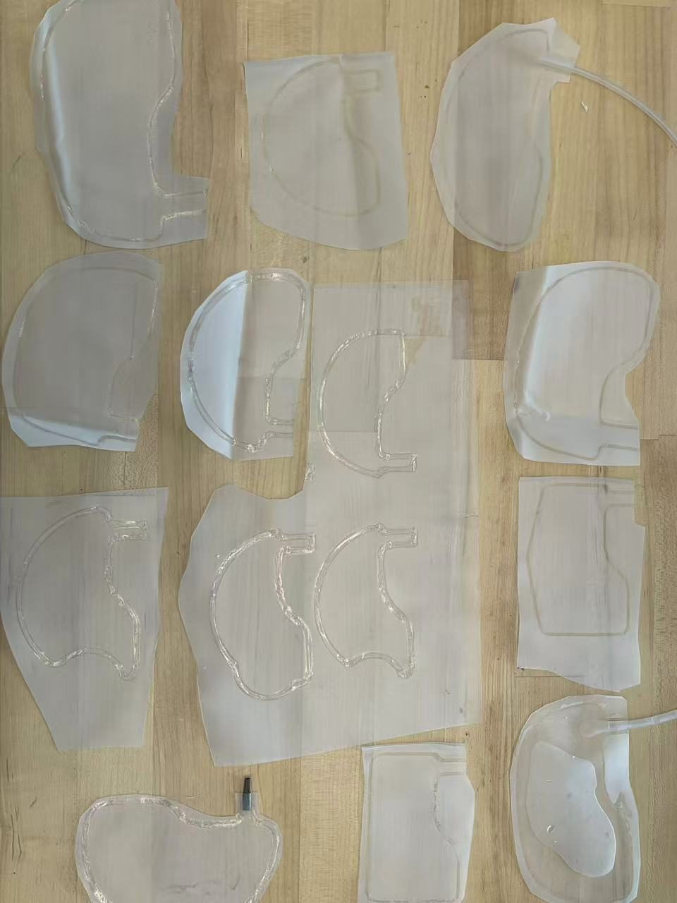
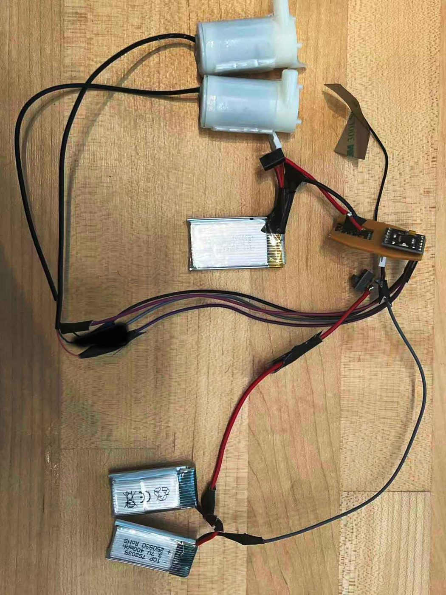
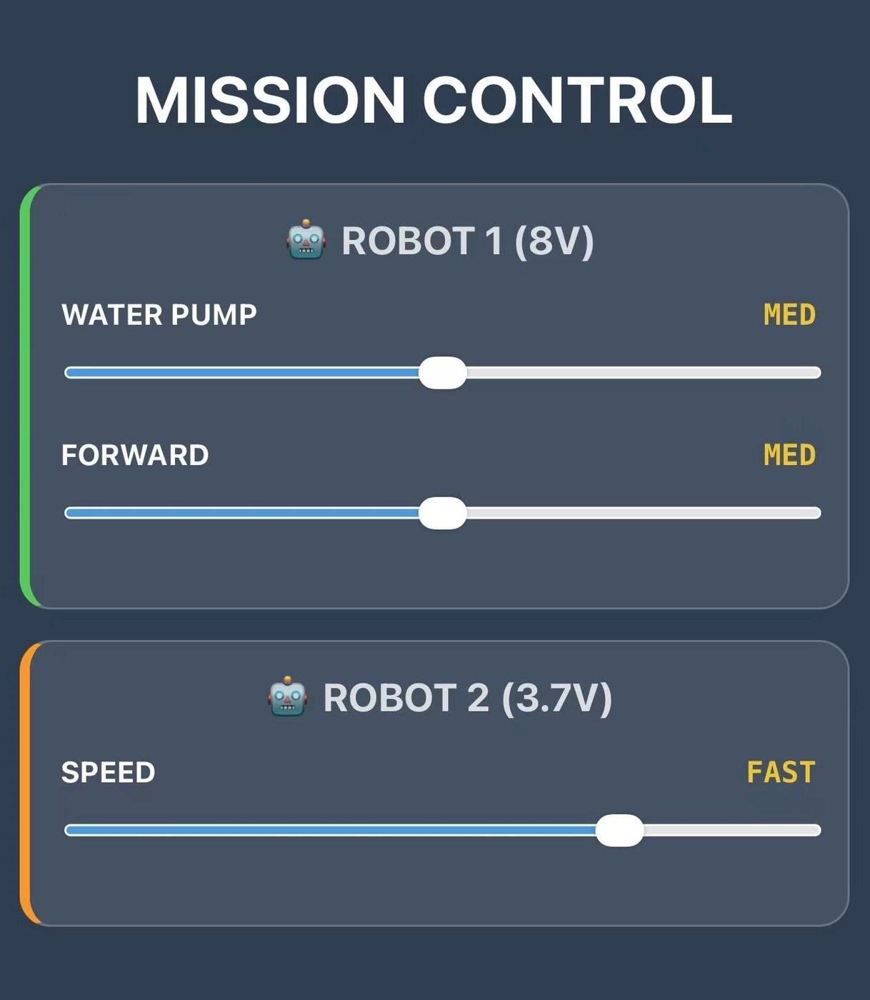
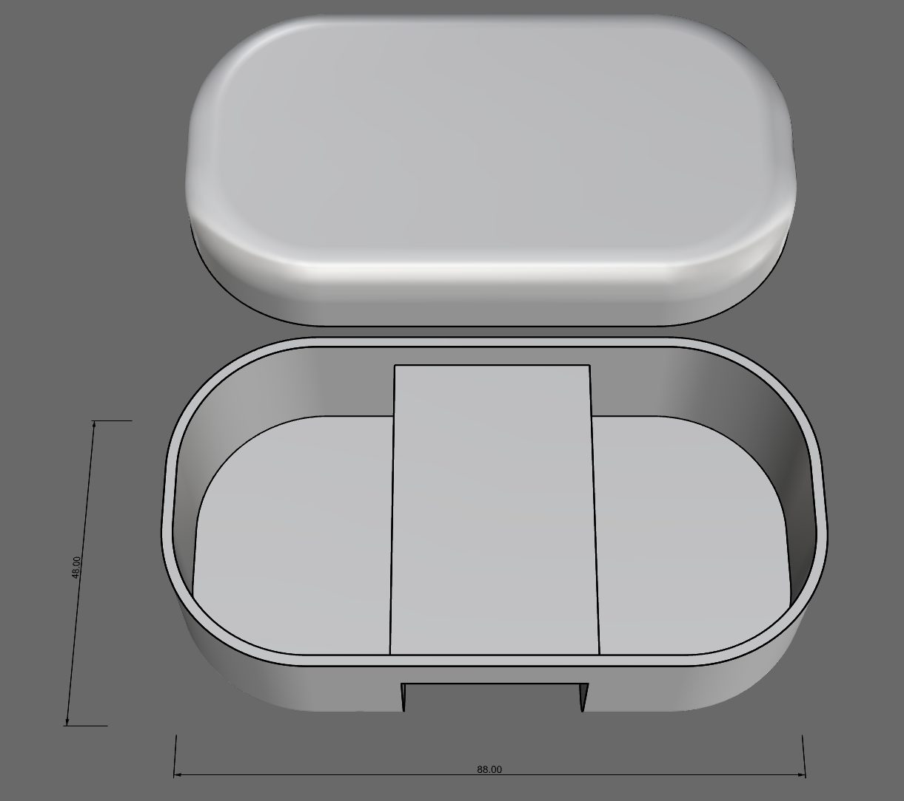
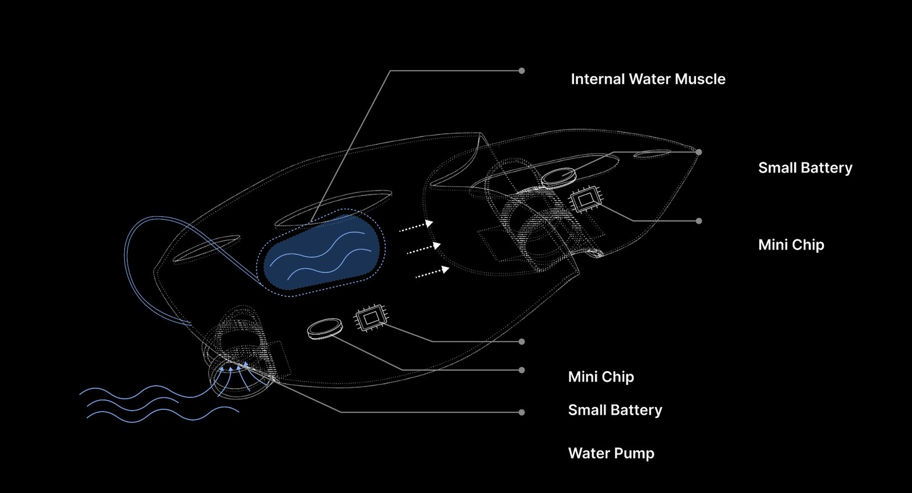
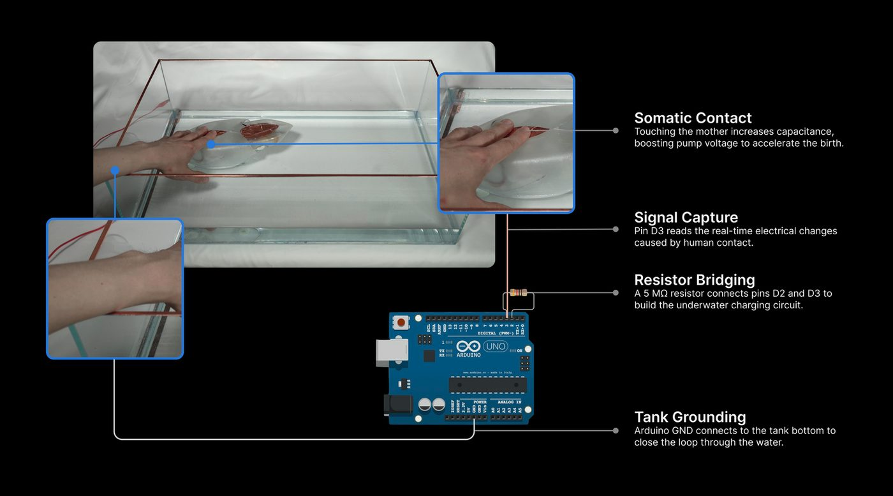

Early versions · technical record
Early versions
Before the mother printed, it carried. Two bodies pushed out a baby made by hand. A third began to make the baby inside.
This page keeps the detail for each body: parts, mechanism, what it showed, what failed, and why the next one changed. Facts come from the class record, the artist's page, the project papers and the team's weekly notes.
What changed, version to version
Read across a row to follow one function.
| Function | 01 First | 02 Second | 03 Third |
|---|---|---|---|
| Mother | 3D printed rigid shell, white, lid over the electronics | 3D printed clear resin, soft, organic shape | Arm, syringe and gel bath, to sit inside the body |
| Baby | Foaming filament shell that floats; XIAO ESP32S3, LiPo, one pump | Clear printed body; microcontroller, battery, jet pump, light sensor | To be printed in gel around an electronic core |
| Push | Pump fills a TPU bag with tank water | Micro pump fills a TPU water muscle | Not built at this stage |
| Birth starts | Slider on a phone page, over WiFi | Hand on the mother closes a capacitive loop | Not reached at this stage |
| Baby made | By hand, outside, then placed in | By hand, outside, then placed in | Inside the mother |
01 · First version
Rigid shell, water bag


How it works
- The baby is printed and wired first, then set into a cavity in the mother's shell.
- A thin TPU bag lies behind the baby. A mini DC pump fills it with tank water. The bag swells and pushes the baby out of the opening.
- Once out, the baby runs its own pump. The water jet moves it forward by reaction. There are no wheels.
- Both bodies join one WiFi network. The mother serves a phone page with two sliders, water pump and forward, and passes speed commands to the baby over HTTP.

The green TPU bag swells out of the shell in the glass tank. Video loads from Vimeo when played.
Signal and power path
- BirthPhone page, sliderthenWiFithenMother XIAO ESP32S3thenDRV8833 channel AthenPump AthenTPU bag swells, baby pushed out
- Mother swimsMother XIAO ESP32S3thenDRV8833 channel BthenPump BthenWater jet
- Baby swimsMotherthenHTTP over WiFithenBaby XIAO ESP32S3thenDRV8833thenPumpthenWater jet
- Mother logic powerLiPo 800 mAh, 3.7 VfeedsSwitch on the milled boardthenXIAO and WiFi
- Mother pump power, common ground2 × LiPo 400 mAh in series, 7.4 VfeedsDRV8833, PWM capped near 6 VthenPumps A and B
Parts
| Controller | Seeed Studio XIAO ESP32S3, one in each body. Seeed wiki |
|---|---|
| Motor driver | DRV8833 dual H bridge board, 1.5 A per channel, one in each body. The mother uses channel A for the bag pump and channel B for the swim pump. PWM 30 kHz, 8 bit. TI datasheet board used |
| Pumps | Mini DC water pumps: two in the mother, one in the baby. Other pumps tried were too noisy or too weak to move a body. pump used |
| Water muscle | TPU inflatable bag, filled with water. The tube is pushed straight into the bag's neck, one size larger, and seals by tension. No glue, no fitting. |
| Mother power | 3.7 V LiPo 800 mAh for the XIAO and WiFi. Two 3.7 V LiPo 400 mAh in series (7.4 V) for the pumps. Firmware caps pump PWM at 195 of 255, about 6 V, to protect the 6 V motors. |
| Baby power | One small LiPo for pump and XIAO, with a charging port. Pump PWM levels 150, 185, 220, 255. |
| Board | Custom power board milled from FR1 on a Roland mill: battery, slide switch, pads on the back of the XIAO. The shell has a cutout for those pads. |
| Mother shell | 3D printed, with a cavity for the baby and a lid over the electronics. |
| Baby shell | Foaming filament, lighter than water. Bambu P1S, nozzle 255 °C, max volumetric speed 5 mm³/s (about 13 h), part fan off, side panel open. Three wall loops and six top layers keep water out. Pump in the centre, held by a closed ring; battery and XIAO on opposite sides for balance; lid seam sealed with waterproof glue. |
| Control | Phone page served by the mother, with sliders for water pump and forward. The mother relays the baby's speed (levels 0 to 4) over HTTP. Level 0 sends PWM 1 so the driver does not sleep. |
| Sensors | None in the final build. The birth starts from the phone. |
| Tank | Glass fish tank. tank used |
| Projection | None. |
What failed on the way
- Linear actuator push. It worked, but it read as a machine ejecting a part. Dropped for a soft push.
- Clear resin hemispheres on a Formlabs printer failed, upright and inverted.
- Air in the bag was too weak to push even a light object. Water was strong enough.
- First shell was too heavy. It sank, and floor friction held it. A pump pushed into a sponge floated and moved.
- Airbags and silicone were hard to shape and to fix a pump to. PCTG looked translucent, but it is denser than water and it leaked.
- One outlet off centre made the baby spin. A taped tube turned the jet and the path straightened.
- Foaming filament fused to tight supports and to a 10 mm brim. With too few supports the soft print collapsed.








Photos and screenshots from the Fab class record.
What it taught
In water, weight and buoyancy decide first. Water, not air, gives a soft bag the force to push a body out. But the birth was a command from a phone, and the baby was made outside and put in.
NextThe second version kept the water muscle and the jet, made the body clear so the baby shows inside, and handed the start of the birth from the phone to a hand on the mother.
02 · Second version
Clear soft body, touch loop


How it works
- The baby is made by hand and set inside the clear mother, where it can be seen before birth.
- A micro pump fills a custom TPU water muscle. It swells slowly and presses the baby toward a flexible opening.
- Copper contacts on the mother's skin meet the water. The tank floor is wired to ground. A hand on the mother raises the capacitance the controller reads.
- The controller raises the pump voltage. The muscle fills faster and the birth comes sooner.
- Free of the opening, the baby starts its own water jet and swims. A photoresistor lets it respond to light.
- Beside the tank, an Unreal Engine simulation carries the lineage on. It starts with four mothers and draws each generation smaller. Births in the tank enter it. See Society.

Signal path
- TouchHand on the motherthenCopper contact and waterthenPin D3 reads, 5 MΩ from pin D2thenPump voltage upthenMuscle fills faster, birth comes sooner
- ReturnWaterthenTank floorthenArduino GND
- After birthBaby free of the openingthenJet pump onthenSwims, turns to light
Parts
| Mother body | 3D printed clear resin, soft, organic shape. The baby shows through it. |
|---|---|
| Controller | Seeed Studio XIAO ESP32, with a motor driver. Seeed wiki |
| Water muscle | Custom TPU structure, filled with water by a micro water pump. |
| Power | Rechargeable battery. All electronics run at low voltage, sealed inside the bodies. |
| Touch sensing | Copper contact points on the mother's surface. Arduino Uno; a 5 MΩ resistor between D2 and D3; D3 reads the change; GND wired to the tank floor so the loop closes through the water. Arduino Uno docs |
| Baby | Clear printed body with a microcontroller, a small rechargeable battery, a micro pump for jet propulsion and a photoresistor. A Bluetooth link to siblings. |
| Tank | Custom glass tank, 60 × 36 × 18 cm, about 3 L of shallow water. |
| Projection | Unreal Engine simulation beside the tank, projected or on a monitor. Language model agents decide when to reproduce; colour shows each one's stance toward birth. |
What it showed
A visitor's hand changes the pace of a machine birth. One circuit runs through a person, a robot and the water. In the tank the birth is slow and clumsy. On the screen the same life form is born at once.
What failed
- Water is not a screen. Membranes snag and jets sputter. A birth can stall.
- The making stayed outside. The baby was still made by people and placed inside. The mother delivered a body it never formed.
What it taught
Touch made the birth shared, and the clear body made the waiting visible. What remained was making: the mother pushed out a body it did not form.
NextThe third version brings the making inside the mother, with an arm, a syringe and a bath of gel.
03 · Third version · bridge
Arm with a syringe

How it works, as planned then
- A desktop arm carries a syringe. The needle writes soft material into a bath of gel.
- The gel holds each line where it is laid, so the print needs no supports.
- The arm also places the electronic parts, and the shell is printed around them.
Parts and first results
| Arm | Hiwonder SO-ARM101 (LeRobot SO-101 follower arm), bought assembled. Chosen after comparing a 3 axis stage, xArm, Lite 6 and myCobot. Arrived 22 Sep 2026; first test 24 Sep 2026. SO-101 design files |
|---|---|
| Extruder | Syringe at the arm's tip, fed from a material reservoir. |
| Gel | Carbopol 940 in deionised water, neutralised with NaOH. Sealed and rested about a day, the gel pushes out its own bubbles. |
| Print material | First chosen: EPON 828 epoxy with EPIKURE 3380, which needs 24 h and heat to cure. Fast curing silicone went first instead: a 5 minute silicone sets too fast; about 10 minutes is the target. |
| Method | Embedded printing in a Carbopol bath, after EpoMemory (Zhong et al., CHI 2023). doi |
| First result | 14 Oct 2026: silicone injected into the gel printed and stayed suspended. |
What it taught
An arm can bring material into the body, and gel can hold a soft print while it cures. The arm also needs power and a housing, or the mother reads as an appliance, not a body.
ThenThe arm moved inside the mother, and the print became a folded shell that opens with air at birth. That is today's system.
Today's printing system, part by part, is on the Build tab; the full chronology is on the Log tab.
Sources
- Wang, R. "Final Project · The Birth of Robots." How to Make (Almost) Anything, MIT, 2025. Final project, week 14.
- Wang, R. Born, Not Made. Artist's page, with drawings by Vera Yu Wu. ruipengwang.space
- Wang, R., Wu, V. Y., Wang, K., Xu, J. H. "Born, Not Made." NeurIPS 2026 Creative AI track.
- Born, Not Made hardware group. Weekly notes, August to October 2026.
- Zhong, K., Minori, A. F., Wu, D., Yang, H., Islam, M. F., Yao, L. "EpoMemory: Multi-State Shape Memory for Programmable Morphing Interfaces." CHI 2023. doi